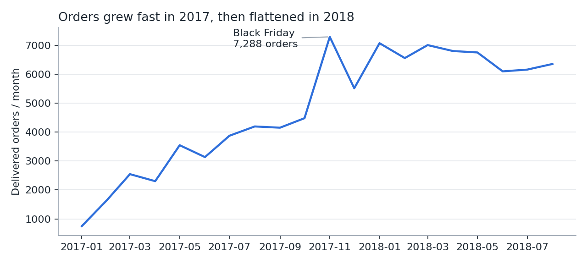
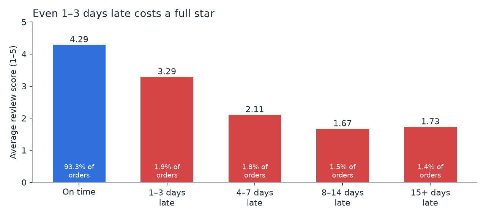
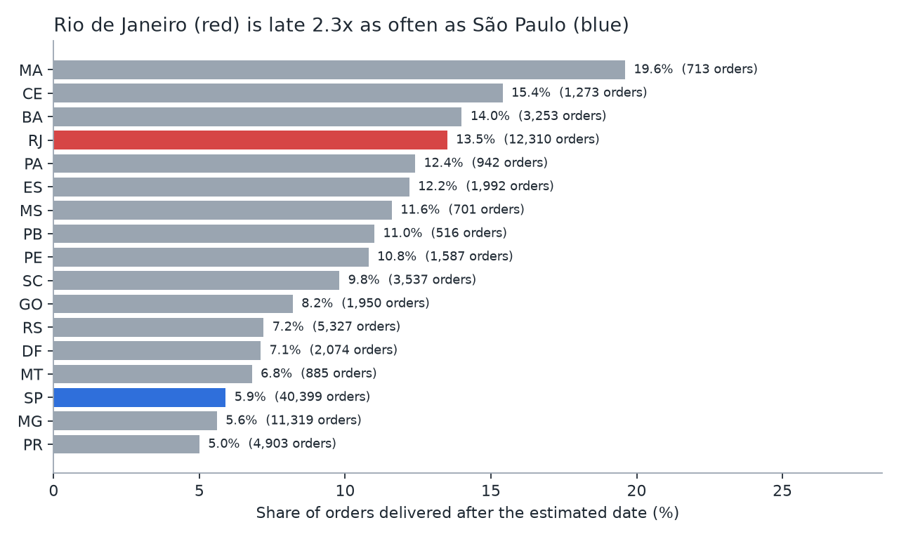
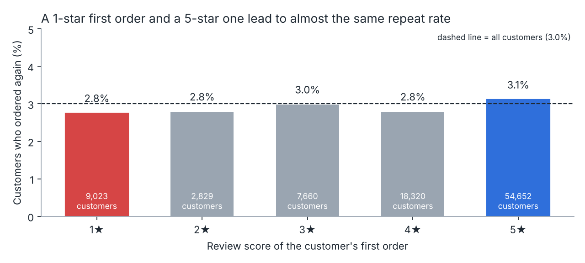
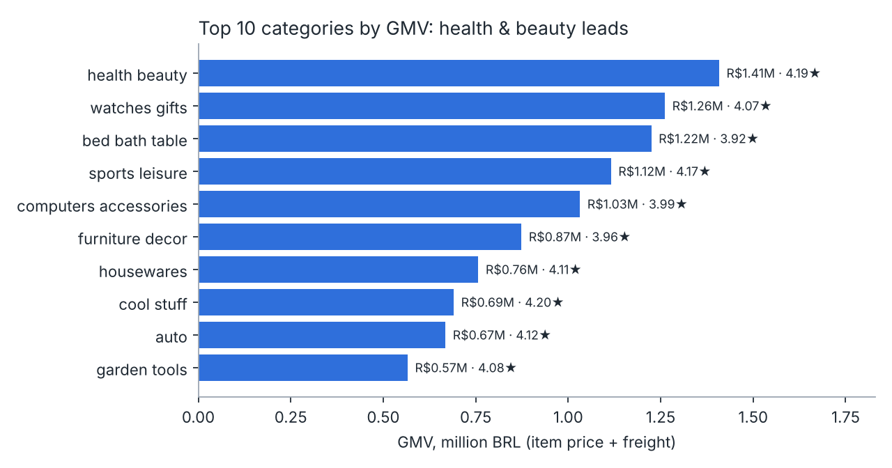

Arriving 1–3 days late costs Olist a full star
An analysis of about 96,000 delivered orders from Olist, a Brazilian marketplace, between January 2017 and August 2018. It looks at three things: whether growth is holding up, how late deliveries affect reviews, and why so few customers come back.
on time
1–3 days late
6.7% of orders arrive after the promised date. "Late" means delivered on a later calendar day than the estimate.
Growth
How fast is the business growing, and is the growth holding up?
- Orders from January to August grew 140% year on year, from 22.0k in 2017 to 52.8k in 2018.
- But monthly volume stopped rising in 2018 and stayed at 6–7k orders a month.

Delivery experience
How much do late deliveries hurt satisfaction, and where do they happen?
- Being 1–3 days late drops the average review by a full star. At 4–7 days late, 68% of reviews are 1 or 2 stars.
- Late orders cluster in Rio de Janeiro (12.1% late on 12.3k orders) and the Northeast (MA 17.5%, CE 13.8%, BA 12.2%). São Paulo is late only 4.5% of the time.
- If Rio had matched São Paulo, about 940 late orders would have been avoided.


Retention
Do customers come back, and does a good first order make them more likely to?
- Only 3.0% of 93,096 customers ever placed a second order.
- A good first order barely helps: 2.8% come back after a 1-star first order, and 3.1% after a 5-star one. Low retention is mainly not an experience problem.
- Health & beauty is the largest category by GMV (R$1.41M) and one of the best rated (4.19★).


What I would do
- Give honest delivery estimates in high-risk states. Customers judge an order against the promised date, not against absolute speed. More conservative estimates for Rio and the Northeast could cut late orders with no change to logistics. Longer promises may lower conversion, so I would run an A/B test with review score as the main metric and conversion rate as the guardrail.
- Fix logistics where the volume is. Rio combines a high late rate with the second-largest order volume, so carrier or warehouse improvements there have the biggest absolute impact.
- Treat retention as its own problem. Start with how often each category is naturally bought (furniture and watches are rare purchases) and whether customers even know they bought through Olist. Then test CRM campaigns in high-frequency categories such as health & beauty.
Limitations
The dataset is public and anonymised, with no traffic, marketing or conversion data, so it cannot explain the 2018 plateau on its own. Review scores exist only for reviewed orders, and the link between delay and score is a correlation, although the dose-response pattern is strong.